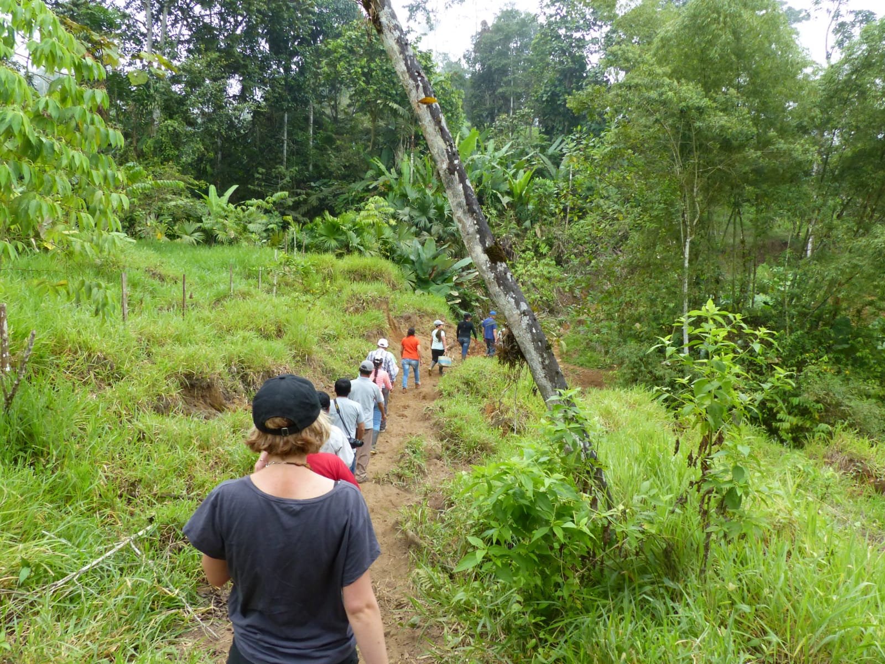
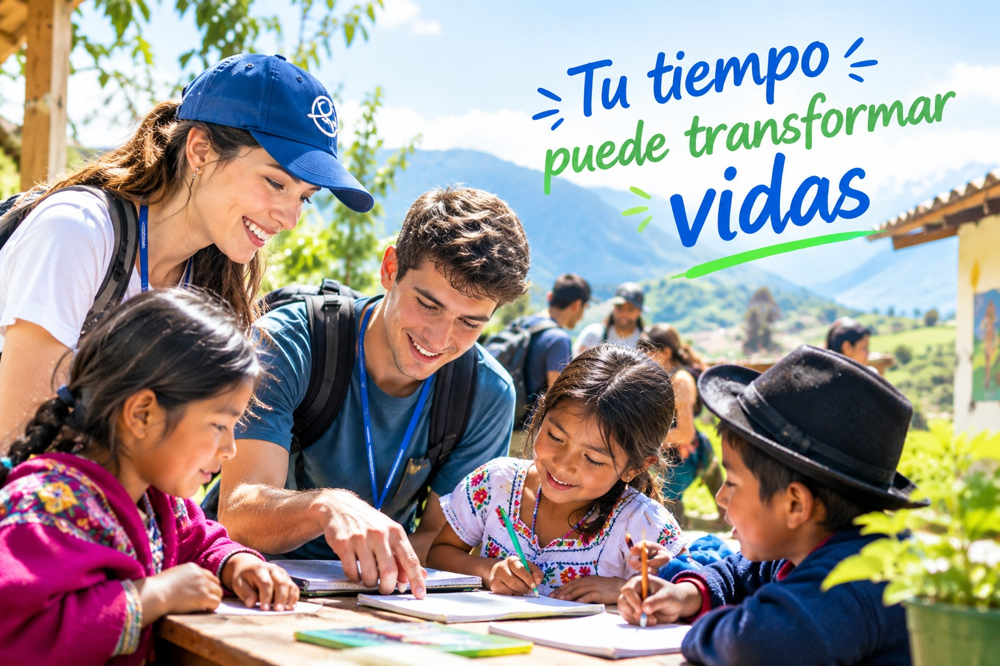

¿Te gustaría conocer nuevos lugares, vivir una experiencia diferente y, al mismo tiempo, contribuir positivamente a una comunidad?
En Fundación CIDCI te invitamos a formar parte de nuestro programa de Voluntariado con Propósito, una experiencia que combina viajes, cultura, naturaleza, convivencia y solidaridad.
Como voluntario podrás participar en actividades de apoyo a comunidades y proyectos sociales, ambientales, educativos, culturales y de desarrollo local, de acuerdo con las necesidades de cada proyecto y tus intereses.
✈️ ¿Qué puedes vivir?
- 🌎 Conocer nuevos destinos y comunidades.
- 🤝 Participar en proyectos de impacto social.
- 🏡 Vivir experiencias de convivencia comunitaria.
- 🌱 Colaborar en actividades ambientales y de conservación.
- 📚 Apoyar iniciativas educativas y culturales.
- 🧑🤝🧑 Conocer personas de diferentes países y culturas.
- 🍃 Descubrir la naturaleza y las tradiciones locales.
- 💡 Compartir tus conocimientos, habilidades y experiencias.
🏠 Una experiencia diferente
Dependiendo del proyecto y de las condiciones establecidas para cada programa, los voluntarios podrán acceder a alojamiento y otros beneficios de estadía a cambio de su participación y colaboración en las actividades de la Fundación y de las comunidades participantes.
La finalidad no es solamente viajar: es viajar dejando una huella positiva.

❤️ TU TIEMPO PUEDE TRANSFORMAR VIDAS
No necesitas ser un experto. Lo más importante es tener disposición para aprender, compartir, respetar otras culturas y contribuir responsablemente.
Viaja con propósito.
Conoce. Comparte. Ayuda. Transforma.
